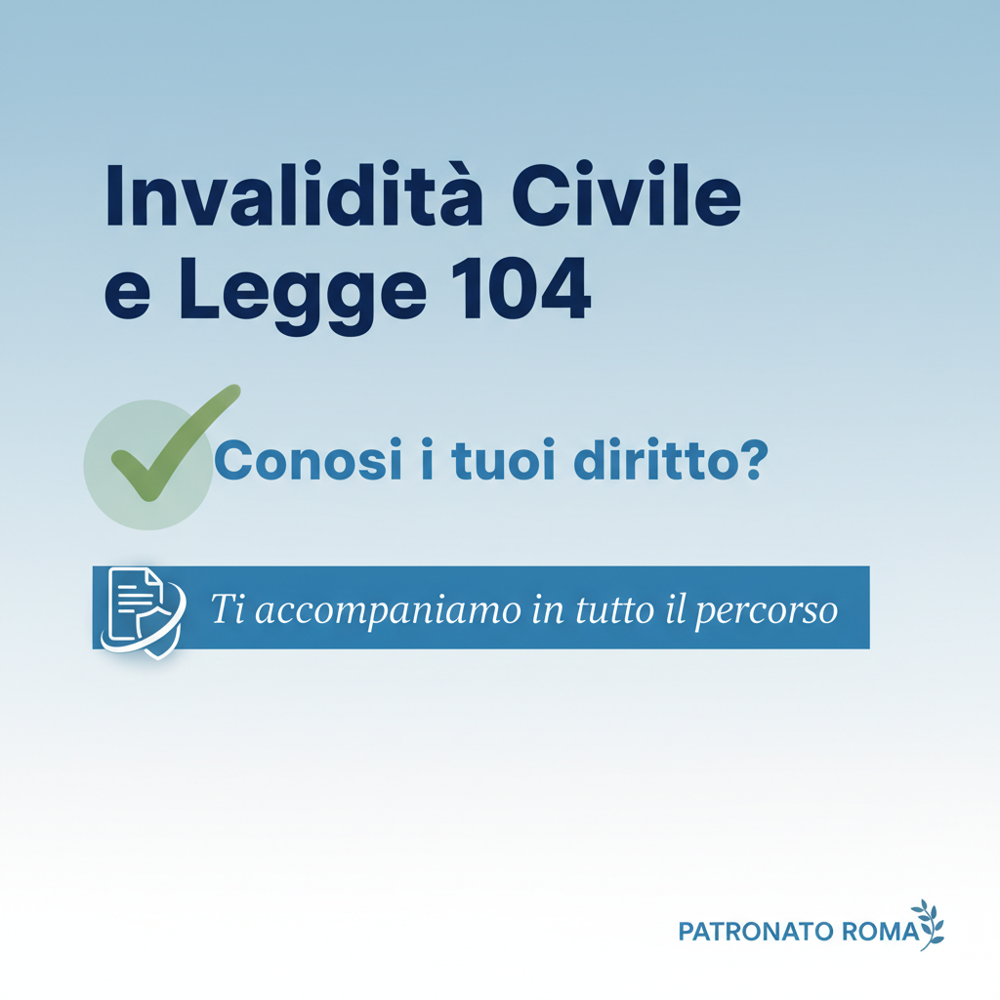

Riforma Disabilità 2026: Cosa Cambia con il D.Lgs. 62/2024

📌 In sintesi: Riforma disabilità D.Lgs 62/2024 in vigore da marzo 2026: valutazione ICF, Progetto di Vita, nuove procedure e cosa cambia per i disabili.
Il cambio di paradigma
Il Decreto Legislativo 62/2024, in vigore da marzo 2026, attua la Legge Delega 227/2021 e rappresenta la più importante riforma in materia di disabilità degli ultimi decenni. Non si parla più solo di "percentuale di invalidità" ma di funzionamento della persona nel suo contesto di vita.
Cosa cambia concretamente
- Valutazione ICF: La Commissione valuta il funzionamento globale (patologia + ambiente + barriere + risorse personali)
- Progetto di Vita Individualizzato: Ogni persona con disabilità ha diritto a un percorso personalizzato con obiettivi, sostegni e servizi
- Superamento categorie rigide: Le percentuali statiche sono affiancate da una valutazione multidimensionale
- Piattaforma unica INPS-ASL-Comuni: Coordinamento integrato per gestione percorso valutativo e attivazione servizi
✅ Le indennità restano: Accompagnamento, assegno mensile e pensione di inabilità rimangono in vigore. Cambia il MODO in cui si accerta la condizione, non i benefici.